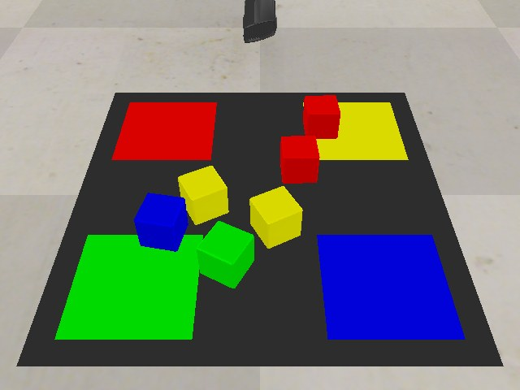

Vision-based object sorting with deep reinforcement learning基于视觉与深度强化学习的物体分拣
NUS ME5402 Advanced Robotics · Part 1 group project (Group 5)
新加坡国立大学 ME5402 高级机器人学 · 第一部分小组项目（第 5 组）
A UR5 arm with an RG2 gripper sorts coloured blocks into matching bins. A pixel-wise Q-learning policy (DRLSorting, Bao et al., Robotica 2022) looks at an RGB-D heightmap and decides where to push, grasp and place. I reproduced the published policy in CoppeliaSim and added the perception layer our group proposed: contour-centred grasp points, explicit target-bin placing and no repeat of failed grasps.
UR5 机械臂配 RG2 夹爪，把彩色积木分拣到同色料框。像素级 Q 学习策略（DRLSorting，Bao 等，Robotica 2022）读取 RGB-D 高度图，决定在哪里推、抓与放。我在 CoppeliaSim 中复现了论文公开的策略，并加入小组提出的感知层：按轮廓质心抓取、显式选择目标料框放置、不重复失败的抓取。
Role:个人贡献： Group project (4 students); I presented the reinforcement-learning formulation and its literature review in the interim presentation. The simulation runs, perception layer and evaluation on this page were redone in October 2026.4 人小组项目；我在中期汇报中负责强化学习建模及其文献综述部分。本页的仿真运行、感知层与评估为 2026 年 10 月重新完成。

Overview概览
Our group proposed an end-to-end vision-to-sorting system: detect objects, localise them in 3D, then let a reinforcement-learning policy pick and place them into bins by colour. The project builds on the published DRLSorting code (Bao et al., Robotica 2022), whose critic networks read an RGB-D heightmap and output a pixel-wise Q value for every push, grasp (16 orientations) and place. For this page I re-ran its pretrained 6-block policy on the paper’s preset test scenes and added the perception layer from our proposal on top.
我们小组提出了一个端到端的视觉分拣系统：先检测物体、做三维定位，再由强化学习策略按颜色把物体抓放到料框。项目基于公开的 DRLSorting 代码（Bao 等，Robotica 2022）：其评价网络读取 RGB-D 高度图，对每一种推、抓（16 个朝向）与放输出逐像素 Q 值。为本页，我在论文的预设测试场景上重新运行了其预训练的 6 物体策略，并在其上加入小组方案中的感知层。
Perception感知
A top-down RGB-D camera is re-projected into a 224 × 224 colour + height map (2 mm per pixel).俯视 RGB-D 相机重投影为 224 × 224 的颜色 + 高度图（每像素 2 mm）。
Pixel-wise Q逐像素 Q 值
Eight DenseNet-121 trunks score every pixel for push and grasp (16 rotations) and, while holding a block, for place.8 个 DenseNet-121 主干为每个像素的推、抓（16 个旋转）以及持物时的放置打分。
Perception layer (added)感知层（新增）
Contour-centred grasp point, explicit target bin from colour, and no repeat of a failed grasp.按轮廓质心抓取、按颜色显式选择目标料框、不重复失败的抓取。
Execution执行
UR5 with an RG2 gripper in CoppeliaSim; the arm follows the chosen pixel and gripper angle.CoppeliaSim 中的 UR5 + RG2 夹爪，按选中的像素与夹爪角度执行。
What we proposed, and what runs here方案中的设想与这里的实现
The interim presentation (February 2026) planned an Isaac Sim + ROS 2 system with YOLO detection, Canny edges and stereo depth feeding an RL policy. The rebuild keeps the same structure but runs in the simulator the published code ships with, so every number on this page comes from runs that can be repeated.
中期汇报（2026 年 2 月）设想在 Isaac Sim + ROS 2 中，用 YOLO 检测、Canny 边缘与双目深度为强化学习策略提供输入。重建版本保留同样的结构，但运行在公开代码自带的仿真环境中，因此本页的所有数字都来自可重复的运行。
| Stage环节 | Interim proposal中期方案 | This rebuild本次实现 |
|---|---|---|
| Simulator仿真平台 | NVIDIA Isaac Sim + ROS 2 | CoppeliaSim 4.1 (the code’s V-REP scene)CoppeliaSim 4.1（代码自带的 V-REP 场景） |
| Object detection目标检测 | YOLO on the left camera image | colour segmentation of the heightmap (blocks are uniformly coloured)高度图颜色分割（积木为纯色） |
| Grasp point抓取点 | ROI → Canny edges → contour centroid | network picks the object; contour centroid within the colour ROI refines the point网络选物体；在颜色 ROI 内取轮廓质心修正抓取点 |
| 3D position三维定位 | stereo disparity, Z = fB / d | simulated RGB-D depth (no stereo matching needed)仿真 RGB-D 深度（无需双目匹配） |
| Policy策略 | RL motion policy with SKRL | pixel-wise DQN critics (DRLSorting, pretrained 30k steps)逐像素 DQN 评价网络（DRLSorting，预训练 3 万步） |
| Recovery失败恢复 | regrasp / retry, safety stop | mask a failed grasp location for the next attempt下一次抓取屏蔽失败位置 |
What the policy sees and chooses策略看到了什么、选择了什么
Each step shows the colour heightmap, the height map and the network’s Q-value map for the action it took: bright means “high expected reward”. The white ring is the executed pixel; the bar is the gripper orientation. Q maps are recomputed offline from the logged inputs with the same weights.
每一步显示颜色高度图、高度图，以及网络对所执行动作给出的 Q 值图：越亮表示预期回报越高。白圈为实际执行的像素，短线为夹爪朝向。Q 值图由记录的输入在离线状态下用同一组权重重新计算。
How the policy learned策略是如何学会的
The repository ships the training logs behind its pretrained models. Curves use the same sliding windows as the authors’ plotting script (500 actions; 50 episodes for sorting). The 6-block run ends at 30,000 actions, the snapshot used on this page.
代码仓库附带了预训练模型对应的训练日志。曲线采用作者绘图脚本相同的滑动窗口（500 个动作；分拣率为 50 个回合）。6 物体训练在 3 万个动作处结束，即本页使用的模型快照。
Training progress训练进展
What this shows, and what it does not本页能说明什么、不能说明什么
- The policy and its weights are the published DRLSorting Model 3 (Bao et al., 2022; BSD-2 licence). I did not retrain it.策略与权重来自公开的 DRLSorting 模型 3（Bao 等，2022；BSD-2 许可），本页未重新训练。
- Windows needed small compatibility fixes, and the runs use PyTorch 2.2 / CUDA 11.8 instead of 1.8 / 11.1 (the older build exhausted this laptop’s memory next to the simulator). The model, weights and test protocol are unchanged.在 Windows 上运行需要少量兼容性修改；运行环境为 PyTorch 2.2 / CUDA 11.8，而非原来的 1.8 / 11.1（旧版本与仿真器同时运行时耗尽了这台笔记本的内存）。模型、权重与测试流程均未改变。
- The perception layer uses only the heightmap the policy sees, not simulator ground truth. With 16 episodes per variant the comparison is indicative, not a statistical result.感知层只使用策略看到的高度图，不使用仿真真值。每种方案 16 个回合，对比结果只是参考，不构成统计结论。